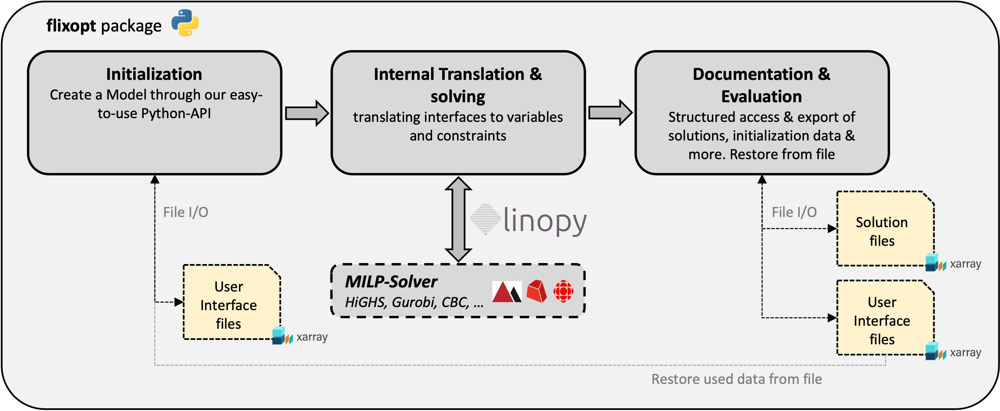

FlixOpt Concepts
FlixOpt is built around a set of core concepts that work together to represent and optimize any system involving flows and conversions - whether that's energy systems, material flows, supply chains, water networks, or production processes.
This page provides a high-level overview of these concepts and how they interact.
Core Concepts
FlowSystem
The FlowSystem is the central organizing unit in FlixOpt.
Every FlixOpt model starts with creating a FlowSystem. It:
- Defines the timesteps for the optimization
- Contains and connects components, buses, and flows
- Manages the effects (objectives and constraints)
Flows
Flow objects represent the movement of energy or material between a Bus and a Component in a predefined direction.
- Have a
sizewhich, generally speaking, defines how fast energy or material can be moved. Usually measured in MW, kW, m³/h, etc. - Have a
flow_rate, which is defines how fast energy or material is transported. Usually measured in MW, kW, m³/h, etc. - Have constraints to limit the flow-rate (min/max, total flow hours, on/off etc.)
- Can have fixed profiles (for demands or renewable generation)
- Can have Effects associated by their use (operation, investment, on/off, ...)
Flow Hours
While the Flow Rate defines the rate in which energy or material is transported, the Flow Hours define the amount of energy or material that is transported. Its defined by the flow_rate times the duration of the timestep in hours.
Examples:
| Flow Rate | Timestep | Flow Hours |
|---|---|---|
| 10 (MW) | 1 hour | 10 (MWh) |
| 10 (MW) | 6 minutes | 0.1 (MWh) |
| 10 (kg/h) | 1 hour | 10 (kg) |
Buses
Bus objects represent nodes or connection points in a FlowSystem. They:
- Balance incoming and outgoing flows
- Can represent physical networks like heat, electricity, or gas
- Handle infeasible balances gently by allowing the balance to be closed in return for a big Penalty (optional)
Components
Component objects usually represent physical entities in your system that interact with Flows. The generic component types work across all domains:
LinearConverters- Converts input flows to output flows with (piecewise) linear relationships- Energy: boilers, heat pumps, turbines
- Manufacturing: assembly lines, processing equipment
- Chemistry: reactors, separators
Storages- Stores energy or material over time- Energy: batteries, thermal storage, gas storage
- Logistics: warehouses, buffer inventory
- Water: reservoirs, tanks
Sources/Sinks/SourceAndSinks- Produce or consume flows- Energy: demands, renewable generation
- Manufacturing: raw material supply, product demand
- Supply chain: suppliers, customers
Transmissions- Moves flows between locations with possible losses- Energy: pipelines, power lines
- Logistics: transport routes
- Water: distribution networks
Pre-built specialized components for energy systems include Boilers, HeatPumps, CHPs, etc. These can serve as blueprints for custom domain-specific components.
Effects
Effect objects represent impacts or metrics related to your system. While commonly used to allocate costs, they're completely flexible:
Energy systems: - Costs (investment, operation) - Emissions (CO₂, NOx, etc.) - Primary energy consumption
Other domains: - Production time, labor hours (manufacturing) - Water consumption, wastewater (process industries) - Transport distance, vehicle utilization (logistics) - Space consumption - Any custom metric relevant to your domain
These can be freely defined and crosslink to each other (CO₂ ──[specific CO₂-costs]─→ Costs).
One effect is designated as the optimization objective (typically Costs), while others can be constrained.
This approach allows for multi-criteria optimization using both:
- Weighted Sum Method: Optimize a theoretical Effect which other Effects crosslink to
- ε-constraint method: Constrain effects to specific limits
Calculation
A FlowSystem can be converted to a Model and optimized by creating a Calculation from it.
FlixOpt offers different calculation modes:
FullCalculation- Solves the entire problem at onceSegmentedCalculation- Solves the problem in segments (with optioinal overlap), improving performance for large problemsAggregatedCalculation- Uses typical periods to reduce computational requirements
Results
The results of a calculation are stored in a CalculationResults object.
This object contains the solutions of the optimization as well as all information about the Calculation and the FlowSystem it was created from.
The solutions is stored as an xarray.Dataset, but can be accessed through their assotiated Component, Bus or Effect.
This CalculationResults object can be saved to file and reloaded from file, allowing you to analyze the results anytime after the solve.
How These Concepts Work Together
The process of working with FlixOpt can be divided into 3 steps:
- Create a
FlowSystem, containing all the elements and data of your system- Define the time series of your system
- Add
ComponentslikeBoilers,HeatPumps,CHPs, etc. - Add
Busesas connection points in your system - Add
Effectsto represent costs, emissions, etc. - This
FlowSystemcan also be loaded from a netCDF file
- Translate the model to a mathematical optimization problem
- Create a
Calculationfrom your FlowSystem and choose a Solver - ...The Calculation is translated internaly to a mathematical optimization problem...
- ...and solved by the chosen solver.
- Create a
- Analyze the results
- The results are stored in a
CalculationResultsobject - This object can be saved to file and reloaded from file, retaining all information about the calculation
- As it contains the used
FlowSystem, it can be used to start a new calculation
- The results are stored in a

Advanced Usage
As flixopt is build on linopy, any model created with FlixOpt can be extended or modified using the great linopy API. This allows to adjust your model to very specific requirements without loosing the convenience of FlixOpt.